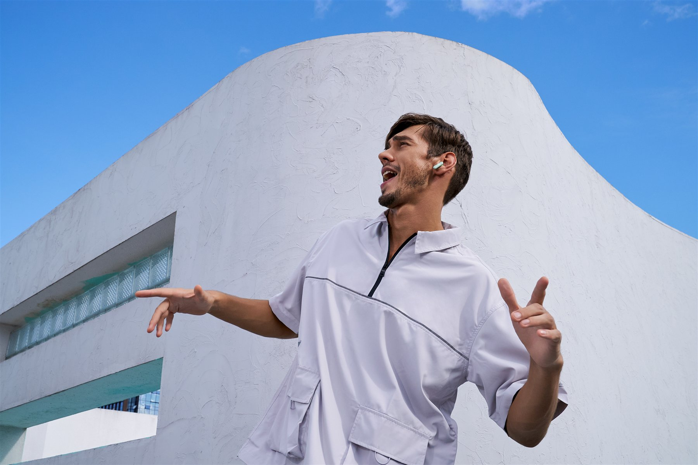
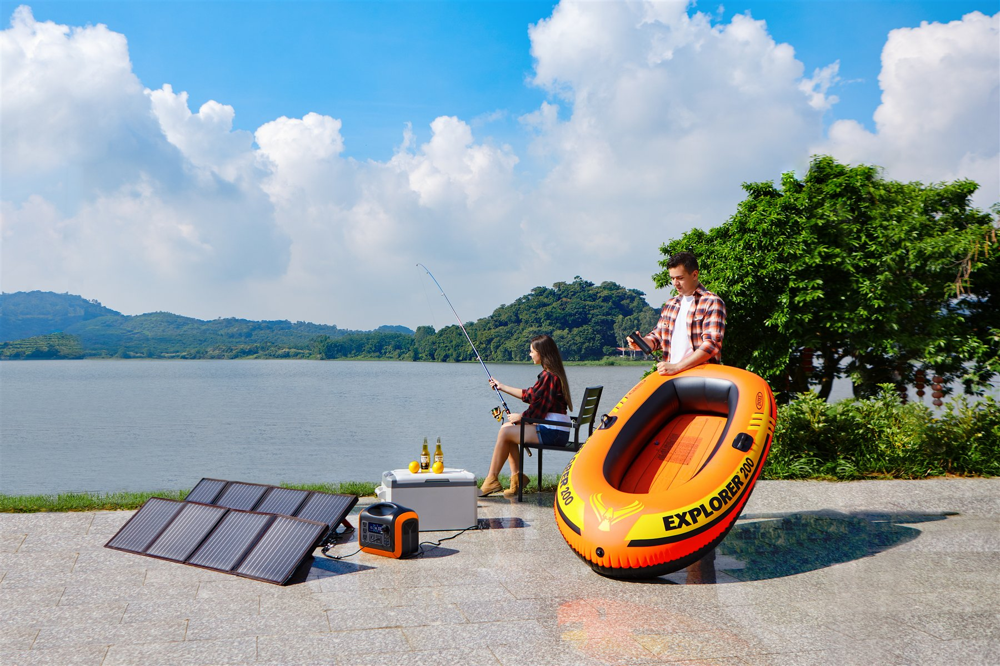
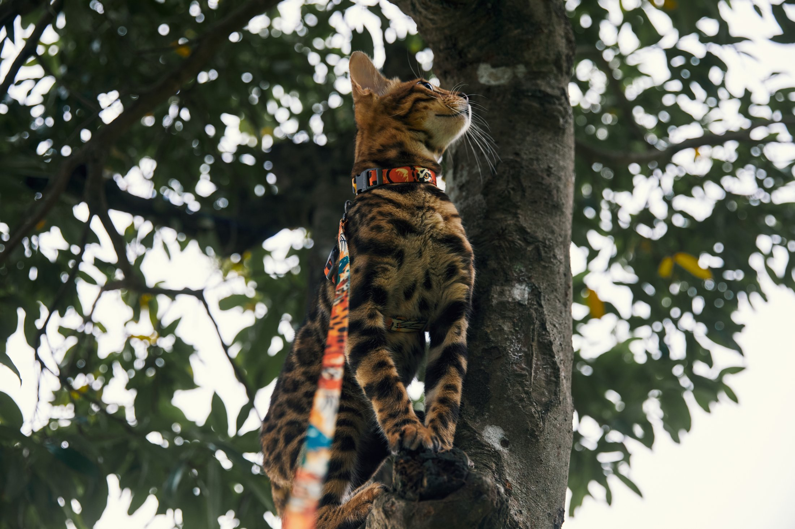

COLLECTION 01 / BRANDED TECH
01
品牌智能硬件
个人音频、智能音箱与电助力出行，
让技术进入日常，让品牌性格显影。
OBJECTS, IN THEIR BEST LIGHT
从佩戴体验、声音设备到电助力出行，让品牌标识、结构细节与功能界面都清楚可读。
04 PROJECTSCOMMERCIAL PHOTOGRAPHER 深圳 · 可按项目协作
我是禄波，拍产品，也拍它进入生活后的样子。
让光线说明材质，让场景承接功能；从构想到交付，照看画面，也照看节奏。

1MORE / PERSONAL AUDIOTHE WORK, IN COLLECTIONS 作品分辑
每组先看代表画面，再进入具体项目。
图像是入口，项目说明交代我如何完成它。
个人音频、智能音箱与电助力出行，
让技术进入日常，让品牌性格显影。
OBJECTS, IN THEIR BEST LIGHT
从佩戴体验、声音设备到电助力出行，让品牌标识、结构细节与功能界面都清楚可读。
04 PROJECTS
COLLECTION 02 / IN CONTEXT让产品走进日常，
也让场景替它说话。
A PRODUCT, IN REAL LIFE
一束自然光、一段行走路线，都能让功能有了温度。让人物、产品与环境各安其位，再寻找它们相遇的瞬间。
02 PROJECTS
COLLECTION 03 / ANIMAL & CARE不急着安排表情，
等一个真正属于它的瞬间。
A LITTLE LESS POSED
宠物拍摄要有耐心，也要给现场留白。从观察与互动里，等动作、眼神与产品恰好同框。
02 PROJECTS动态影像待补充
编辑模式下拖入视频素材在静帧之外，
让动作与时间继续展开。
MOVING IMAGE / VIDEO
计划展示四条视频。选择项目卡片，可跳转到对应的视频展示位；素材补入后即可播放。
04 VIDEOS作品目录中同一项目包含不同拍摄语境，因此部分项目会出现在多个子合集中。项目年份、公开权限及具体职责请在发布前核实。
PROJECT NOTES / 细看项目
从品牌、场景到产品细节，记录画面的构想与执行。项目职责和成果以实际经历为准。
万魔耳机 · 品牌影像
听不见的声音，
在动作与细节里显形。
先让耳机回到使用者身上：建筑线条与人物动作交代佩戴状态，再用开盒与手持细节收拢产品信息。[请按实际品牌沟通及创作方案校准]
[请补充本人负责环节：方案 / 模特沟通 / 场景 / 拍摄 / 后期]
[请补充真实交付用途或结果；无可公开信息可删除]
制造设备 · 室内场景
设备落在空间里，
功能才有了尺度。
先用空间说明使用环境，再让人与设备相遇，最后回到产品本身。
[请补充本人负责环节：方案 / 空间布置 / 拍摄 / 后期沟通]
[涉及客户或机构时，请先确认作品公开许可]
哲轮科技 · 电助力自行车
从完整车身到操控细节，
展现电助力出行的产品语言。
先以整车轮廓建立产品识别，再靠近驱动系统与把手显示屏，让造型和功能在同组画面中衔接。[请按实际拍摄与用光方案校准]
[请补充本人负责环节：方案 / 布光 / 拍摄 / 后期]
[请补充真实交付用途或结果；无可公开信息可删除]
JBL 音箱 · 产品影像
让声音拥有形状，
让材质与标识成为视觉节奏。
以产品轮廓和表面质感建立识别，再用局部细节强化品牌标识与结构层次。[请按实际创作方案校准]
[请补充本人负责环节：布景 / 布光 / 拍摄 / 后期]
[请补充真实交付用途或结果]
户外电源 · 场景呈现
让电源走出室内，
进入户外使用的现场。
从湖畔到车内，用不同场景展开电源的使用方式；环境负责铺陈，产品仍是画面中心。[请按实际拍摄方案校准]
[请补充本人负责环节：方案 / 外景统筹 / 用光 / 拍摄 / 交付]
[请补充交付用途或可公开结果]
户外 · 人物与宠物
在海风与脚步之间，
留住同行的节奏。
以海岸环境串联人物、宠物与出行产品，在互动和环境之间留出呼吸感。[请按实际创作意图校准]
[请补充本人负责环节：方案 / 现场调度 / 拍摄 / 选片]
[请补充活动用途或结果；无则删除]
宠物用品 · 户外影像
不打断它的步伐，
让产品自然进入画面。
以草地与自然光保留宠物的活动状态，同时让背带在画面中可辨。[请按实际创作方式校准]
[请补充本人负责环节：产品方案 / 现场引导 / 拍摄 / 选片]
[请补充真实交付情况；无则删除]
VIDEO PROJECTS / 04
四个视频展示位，可分别补充视频文件、项目标题与说明。
品牌影像
[补充本条视频的主题或拍摄说明]
视频文件待补充
编辑模式下拖入视频素材时尚走秀
[补充本条视频的主题或拍摄说明]
视频文件待补充
编辑模式下拖入视频素材宠物用品
[补充本条视频的主题或拍摄说明]
视频文件待补充
编辑模式下拖入视频素材宠物护理
[补充本条视频的主题或拍摄说明]
视频文件待补充
编辑模式下拖入视频素材视频内容
常用软件、相机与灯光系统：[请补充]
视觉职责
不仅仅只是按快门，有想法、有思路，更有效率
ABOUT BO PROFILE / 01
我做商业摄影与影像制作，涉及电商产品、服饰模特、品牌上新与视频素材。工作从需求沟通开始，经过置景、用光、现场执行与后期交付。我在意成片，也在意它如何被稳定地完成。
现场常有变量，流程负责留出余地。我有团队排期、任务分工和摄影棚筹建经验；先厘清目标与条件，再把注意力交给画面。
EXPERIENCE / PRACTICE
摄影摄像师 / 视觉团队负责人
摄影摄像师
建议补充可公开的代表项目与本人职责。
摄影师
LET'S MAKE SOMETHING CLEAR
SHENZHEN · CHINA电话和邮箱来自简历，公开部署前请确认是否展示。